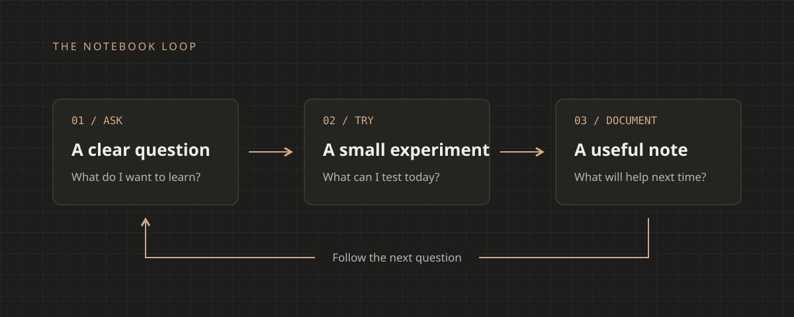

Notes from a curious afternoon
A small question, a little code, and somewhere to begin.
A sample write-up about following a question, trying something new, and documenting the result.
This sample article begins with a simple question. What happens when we slow down, explore an unfamiliar idea, and write down what we discover?
For this afternoon’s experiment, the goal was small: take a few observations and turn them into a note I could find again. A useful notebook starts with a little context, a reproducible example, and an honest account of what happened.
Start with something small
Before building anything elaborate, I wrote down the question and the result I expected. Keeping those two things close makes it easier to notice when an assumption is doing more work than the code.
- Choose one question that can be explored in an afternoon.
- Keep the smallest example that explains the behavior.
- Record what changed, including the attempts that led nowhere.
A little structure goes a long way
A short script is often enough to make an idea concrete. Here, format_note() collects a title and a few observations into a plain text note.
# Keep the question close to the observations.
def format_note(title: str, observations: list[str]) -> str:
heading = f"# {title}"
lines = [f"- {item}" for item in observations]
return "\n".join([heading, "", *lines])
note = format_note("An afternoon experiment", [
"Start with a question.",
"Keep a reproducible example.",
])
print(note)The output is intentionally simple. There’s enough structure to scan later, and enough freedom to add a sentence about something unexpected. That balance matters more than finding the perfect format on the first attempt.
Leave a trail for your future self
The process is a loop: ask a question, try something, and leave a note. Each pass gives the next experiment a slightly better starting point.

A diagram, a screenshot, or a few lines of terminal output can hold the detail that a paragraph misses. Give that detail a caption so it still makes sense when you return to it weeks later.
The useful note is the one that helps you pick up the thread again.
What I’m taking forward
A small question doesn’t need a large system around it. Start with the example, explain the outcome, and keep the next question nearby. The rest can grow from there.